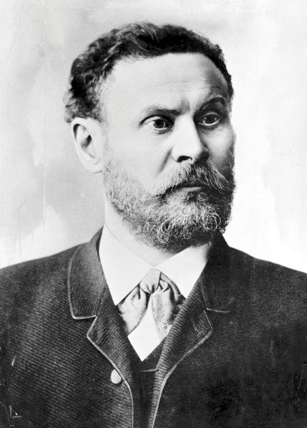

Quel est le premier planeur?
Bien que de nombreux inventeurs aient contribué au développement du planeur, le plus célèbre de tous les pionniers du vol plané est l'Allemand Otto Lilienthal (1848-1896), qui commence en 1867 à faire, en compagnie de son frère Gustav, des expériences sur la portance et la résistance de l'air.
Quel est le premier planeur plastique?

Le Glasflügel H-201 "Libelle" est un planeur monoplace à ailes médianes, muni d’un empennage horizontal situé à la base de la dérive et d’un train d’atterrissage fixe ou escamotable selon la version. Le H-201 est directement dérivé d’un autre planeur construit par le constructeur Glasflügel, le H-301.